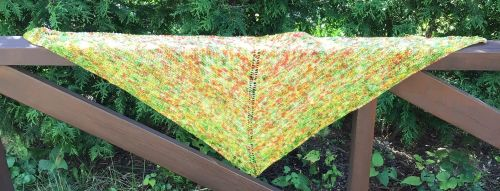

The five boxing wizards jump quickly.
I love knitting. I don't knit much for myself, mainly my work goes to charity. The shawls pictured are destined for people with terminal illnesses to keep them warm while in care.
Which one of the shawls would you prefer?
Amount of course work done on October 12: